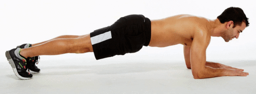

Tips
- Elbows stationary WRT body
- Body not rocking back and forth
- Lift dumbbell up to nipples
- Avoid curling wrist when tired
- Lower dumbbell all the way until arm is vertically downward; don't stop lowering before then
- Dumbbell should not move to a different sagittal plane at any time
- Jeremy Ethier built with science
Links
- Same movement as Dumbbell Bicep Curl using a kettlebell instead of a dumbbell
- Livestrong


Tips
- Cable attached at head elevation
- Bend over until upper arm parallel to cable and forearm perpendicular to cable
- Elbows clamping head without touching head
- Lean forward one one foot instead of letting cable keep you upright
Links


Tips
- Raise dumbbell vertically upward
- Elbows at 80 degrees WRT mid-sagittal plane
- Back is straight
- Seated with slight lean backward OR standing
- At top: arms are vertical, dumbbells not touching, and elbows not locked
- At bottom, upper arms as low as 45 degrees below horizontal
Links

Tips

- Literature found no significant difference between which muscles were activated more in wide and narrow grip pushups
- Can default to having hands be shoulder width apart or slightly wider
- National Library of Medicine
- Unconfirmed optional: squeeze chest at top of pushup
- Unconfirmed optional: Remain in pushup's top position for a short while after arms are at muscle failure
- Gripping parallettes (portable parallel bars one foot high) allows pushup to dip deeper => greater range of motion.
- Unconfirmed: Legs and feet can be pinched together or shoulder-width apart; doesn't matter

- To make the pushup less intense, knees can touch ground

- Chest focused: Elbow remains vertically above hand
- Triceps focused: Forearm bends 45 degrees away from vertical
- Jeremy Ethier perfect pushup youtube


- Hands & fingers unrotated on ground
- Before pushups, rotate hands laterally on ground to move elbows medially.
- Before pushups, rotate shoulder so that elbows move medially.
- Jeremy Ethier perfect pushup youtube
- Saturno movement youtube short


- Athlean-X 10 pushup mistakes
- While pushing up, rotate move elbow medially, to recruit chest muscles more


- Forearm should be mo more than 45 degrees away from mid-sagittal plane to prevent shoulder injury
- Calisthenic movement youtube perfect pushup

- Throughout the pushup, keep shoulders blades depressed inferiorly
- Calisthenic movement youtube perfect pushup

- Retract scapula medially deliberately when moving down, not just letting gravity squeeze scapula together
- Protract scapula laterally when pushing upward until fully protracted at top
- STRIQfit perfect pushup
- FitnessFAQ 10 common pushup mistakes

- Body moves a bit superiorly on the way down so that the fingertips are in line with nipples (rather than neck) when fully down
- Calisthenic movement youtube bad pushups


- Rotate pelvis kyphotically if back is arched lordotically; keep spine straight throughout pushup
- Keep glutes squeezed throughout pushup
- Calisthenic movement youtube perfect pushup

ROM good at top since elbows fully straight, but chest not touching floor

ROM good at bottom since chest touches ground, but elbows not fully straight at top

Good full ROM: chest touching floor at bottom, and elbows fully straight at top
- Full range of motion (ROM): chest touching floor at bottom, and elbows fully straight at top
- It doesn't matter whether elbows are fully locked at top or [slightly less than fully locked] at top
- FitnessFAQs 10 pushup mistakes youtube
- Red Delta Project youtube video about locking elbows

Variation: Sphinx pushup
- Focuses on triceps and abs
- Instructions: Start in plank position, with elbows directly underneath (or a bit inferior to) shoulders, with hands being shoulder width apart. Push up until elbows are fully extended. Keep back and legs straight at all time during the sphinx pushup
- Calisthenic movement youtube perfect pushup
- Fitness Drum
- Cult Fit official


Variation: Pseudo-planche pushup
- Harder variation of pushup with posture similar to a full planche
- Instructions: Start in pushup's top position, then move body superiorly until angle of arm increases past 90 degrees; Full planche angle is about 45 degrees
- Fingers should be pointed 45 degrees (or even 90 degrees) from mid-sagittal plane
- To combat [pushing body inferiorly, can gently touch head to wall throughout pseudo-planche pushup; head must remain in gently contact with wall throughout this exercise
- FitnessFAQs youtube
- FitnessFAQs planch pushup progression youtube
- Calisthenic movement youtube perfect pushup
Variation: pike pushup

- Focuses on shoulders
- Instructions: Hands and feet 3 feet apart or the smallest dist that hands and feet can both be comfortable flat on floor. Arms can be vertical or slightly in front of or behind face level.
- Same {elbow flare, scapula movement, spine&neck straight, range of motion, moving body superiorly/anteriorly} compared to regular pushup
- Heels lift off floor, while toes are always touching ground
- Keep pelvis angle constant throughout this exercise
- Elevate hands to decrease intensity.
- Elevate feet to increse intensity.
- Planche pushup and handstand pushup are more advanced forms of the pike pushup.
Variation: incline/decline pushup

- Incline is less intense and focuses on shoulders and upper chest
- Decline is more intense and focuses on lower chest
Variation: Diamond pushup


- Diamond pushup focuses on triceps and pecs more than regular pushup
- Arms vertical at top of pushup
- Bend elbows so that body doesn't move inferiorly nor superiorly upon descending/ascending
- Middle of sternum lands in middle of finger diamond
- Decline is more intense and focuses on lower chest
Variation: Archer pushup


- When elbow flare angle is 10-30 degrees, this exercises focuses on anterior deltoid & triceps brachii
- When elbow flare angle is 30-70 degrees, this exercises focuses on pecs
- When elbow flare angle is >70 degrees, shoulder injury can occur
- At bottom of pushup, touch pec to thumb
- When tired, avoid [moving medially and then anteriorly] in separate motions
- The wider the distance between hands, the more intense this exercise becomes.
Variation: Spider(man) pushup


- Works rectus abdominis, oblique abdominals, hip flexors (to raise knee), and quadriceps in addition to regular pushup muscles.
- Start in regular pushup position
- Can do crawl variation to crawl forward with each step



Tips & Links
- Start facedown on ground. Then support body using forearms. Forearms should be pointing forward like a sphinx.
- Elbows directly underneath shoulders
- Squeeze glutes and quads to keep legs straight
- Hold Plank posture for as long as you like.
- Can ball hands into fists, as if slamming a gavel.
- Neck line should coincide with spine line. Neck tends to droop when tired.
- If shoulders (not back) becomes rounded, return to straight spine posture.
- Scapulae should be depressed inferiorly rather than elevated superiorly
- If gravity gradually pulls the scapulae together, protract scapulae laterally.
- Keep back straight by engaging abs to kyphose the thoracic spine. Back a bit rounded is OK.
Variation: Extended Plank
- Start in plank posture. Move toes backward (or slide forearms forward) so that nose is at same level as elbow. Maintain this posture.
- FitnessFAQs 10 plank mistakes
Variation: Side Plank
- Feet stacked, elbow directly beneath armpit.
- Keep neck, torso, glutes, and legs in the same sagittal plane and the same frontal plane.
- Keep {abs, glutes} tensed.
- Get Exercise Confident
- Sign of getting tired: leaning into [shoulder touching ground], neck leaning forward.
- Sign of getting tired: hips sagging toward ground
- Sign of getting tired: hips jutting skyward
- Sign of getting tired: rotated/rolling body
- Sign of getting tired: hip bent forward or backward
Variation: Star (Side) Plank
- Feet stacked
- Same muscles worked as side plank except more challenging.
- Hold this starfish posture.
- Josh Wilson star side plank youtube
Variation: Hand Plank
- Can hold pushup posture instead of resting on forearms
- Shoulders directly above hands
- Easier than resting on elbows due to being less taxing on abs
Variation: Side Plank With Rotation
- At top, body is in a perfect T-shape.
- Elbow directly beneath shoulder.
- Built Lean youtube
- There are many other advanced variations of Planks that have not yet been added to this HTML. Ex: https://greatist.com/move/plank-variations-for-core-strength
Links


Tips & Links
- Start faceup lying on ground
- Masterclass
- Calisthenic movement never skip this exercise

- Fingers can point forward or backward or laterally
- Fingers pointing cranially will (1) stretch the anterior deltoids and pecs more, and (2) Retract scapulae medially and puff chest out.

- Move feet closer to hands to make this exercise easier.

- Keep hip joint at 180 degrees
- Keep chest puffed out or neutral, not hunched.

- Keep lower back neutral, not arched lordotically.
Variation: Reverse Plank Crab Walk

- Keep hips/butt at 180 degree angle instead of sagging down.
Variation: Reverse Plank on One Leg

Variation: Reverse Plank on One Arm


Variation: Reverse Plank Side To Side

- Heels don't leave ground at any time. Toes can leave ground.
- Keep hip joint at 180 degrees
- Keep chest puffed out or neutral, not hunched.
- Keep lower back neutral, not arched lordotically.
Variation: Reverse Plank Crab Walk
- Keep hips/butt at 180 degree angle instead of sagging down.
Variation: Reverse Plank on One Leg
Variation: Reverse Plank on One Arm
Variation: Reverse Plank Side To Side
- Heels don't leave ground at any time. Toes can leave ground.
Tips

- Shoulders directly above hands
- Hips directly above knees


- Hands shoulder width apart (or slightly wider)
- Fingers pointed forward
- Elbows facing caudally

- Fully retract scapula medially.
- Wait 1 second.
- Fully protract scapula laterally.
- Wait 1 second.
Variations on starting posture

Variation: Plank posture on knees

Variation: Plank posture

Variation: Pushup posture

Variation: Plank posture with toes pointed

Variation: Pushup posture with toes pointed

Variation: One arm pushup posture
Mistakes

Bending elbows; elbows should remain unbent

Curling spine kyphotically; spine must be kept straight

Arching back lorditically; spine must be kept straight

Elevating shoulders cranially; shoulders should remain depressed caudally
Links

- Bend knees until both knees are at 90 degrees
- Front knee should never be in front of front toes
- At bottom of lunge, rear knee can be slightly above ground or gently touch ground
- Mind Body Soul
- National Strength and Conditioning Association (NSCA) muscles worked
Variation: Easy variation

- Up and down on same leg
Variation: Reverse Lunge

- Can step backward instead of forward when lunging
Variation: Lunge Jump

Variation: Walking Lunge

Variation: Lunge with dumbbell


- Plank exercise except forearms are resting atop an exercise ball
- Move elbows in a small circle.
- TappBrothers forget sit ups
- Fitness Drum


- Hold this posture without moving
- Lower back contacts floor at all times
- Tuck chin in
- Men's Health youtube
- Calisthenics Movement youtube sit ups are a waste of time
Variation: Log Roll


- At bottom of chest fly, keep tension in arms; don't [relax arms and let shoulders carry the dumbbells' weight].
- If arms are too straight at bottom of chest fly, then biceps will be focused on more than chest.
- Keep elbows bent at about 15 degrees at bottom and middle of this exercise
- To prevent shoulder injury, upper arms should decline no lower than ~20 degrees beneath frontal plane of body.
- Don't crash dumbbells into each other at top.
- Straighten arms vertically at top of chest fly.
- WeightTraining.Guide
- Mind Pump how to properly do a dumbbell fly
- Scott Herman Fitness how to dumbbell fly on a flat bench
- Muscle and Fitness chest exercises

- Body contacts bench/floor at four locations: head, upper back, butt, feet

- Keep elbows NOT tilted at bottom of chest fly

- Arms should be aligned with direction of weight so as to avoid including anterior deltoids or lats.
- Jeremy Ethier stop doing chest flys like this

- Keep {hands, elbows, shoulders} in same transverse plane at all times.
- Jeremy Ethier stop doing chest flys like this

- Depress shoulders caudally at all times to keep shoulders from overengaging.

- Keep scapulae retracted medially throughout exercise.
- Squeeze pecs medially without hunching shoulders by imagining squeezing the biceps (or elbows) close to each other medially.

- Due to low-to-none chest contract at top of chest fly, can use a cable fly instead or can wrap resistance bands around the dumbbells and around the underside of the bench to simulate the constant tension of a cable fly.
Variation: Floor fly

- Maybe lie down with back on a towel or solid foam block to simulate height of bench
- Slightly decreased range of motion compared to using bench due to [elbows hitting ground].
- Athlean X floor fly
Variation: One Arm Dumbbell Chest Fly

- Same as bilateral dumbbell chest fly, except core/abdominal muscles must be engaged to prevent weight from knocking body off bench.
- Livestrong

- Feet are shoulder-width apart. Toes pointed forward.
- Arms are shoulder width apart.
- Overhand grip
- Arms are pointing vertically downward at bottom of exercise.
- Imagine rowing a barbell into bellybutton at top of exercise.
- Stick butt somewhat to decrease pressure on lower back.
- Scott Herman Fitness

- Keep spine neutral, not arched [kyphotically/lordotically].
- If lower back becomes sore quickly, train lower back more!
- Keep {shoulder, spine, hips} in same position WRT feet throughout this exercise.
- Sean Nalewanyj youtube short


- Don't pull dumbbells straight up to nipples, since this works trapezius.
- Should drive dummbells and elbows backward instead.
- Squeeze lats at top of dumbbell row
- Alex Crockford youtube

- Keep shoulders depressed inferiorly/caudally throughout this exercise.
- Delta Bolic Andrew Kwong shrug shoulder
Variation: Underhand grip and other grips


- Can grip dumbbell differently from barbell.
Variation: One Arm

- Only the side that is rowing should move the scapula; the other side of the body should neither roll nor move the scapula.
- Protract scapula laterally at bottom, and retract scapula medially at top.
- Shoulders remain (VERY) slightly above hips.
- Scott Herman Fitness one arm dumbbell row
- Rennaisance Periodization


- Can gently touch dumbbell to lowest rib's skin to ensure full range of motion at top of dumbbell row.
- Arm is straight and points downward vertically at bottom.
- Rennaisance Periodization
- Upper arm should be flared <30 degrees away from sagittal plane.
- Jeff Nippard how to build bigger back

- Mistake: shifting torso while rowing.

- Should roll body a bit--not too much and not too little.
- Jeff Nippard how to build bigger back

- Mistake: Head and body bobbing up and down while rowing.

- Keep neck in line with spine.
- Men's health
- When lats get tired, can pull dumbbell up with a bit of momentum ("cheating") so that lats can contract harder at top of dumbbell row.
- Jeff Nippard how to build bigger back
- Omarlsuf STOP Doing Dumbbell Rows With STRICT Form